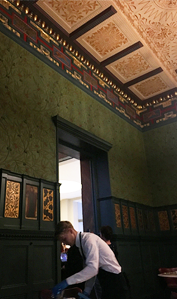

Victoria and Albert Museum
https://www.vam.ac.uk/visit
古美術・工芸・装飾美術など多岐にわたるコレクションが収められた博物館です。とにかく展示数が多く、陶磁器やガラス工芸などのディスプレイは圧巻でした。美しいミュージアムカフェも有名で、ウィリアム・モリスがデザインしたというカフェで食事ができました。

古美術・工芸・装飾美術など多岐にわたるコレクションが収められた博物館です。とにかく展示数が多く、陶磁器やガラス工芸などのディスプレイは圧巻でした。美しいミュージアムカフェも有名で、ウィリアム・モリスがデザインしたというカフェで食事ができました。